Four days, ruled into bands.
Naxos is 430 km² with a 1,003 m mountain in the middle[1] — roughly five days of material for a trip that has three or four. Every decision below is a subtraction, and every one of them is set by a clock: what shuts at 15:30, what shuts on Tuesday, when the sun goes down, and which days you're holding car keys.
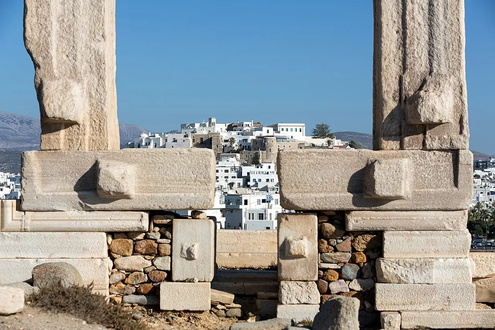
Base once, in Chora[73]. Rent a car for exactly two of your days and give both to the interior[4]. Let the bus carry the beach day[2]. Take zero off-island ferries[14].
The spread
left column = the constraint,everything else = the plan
Chora, on foot
no car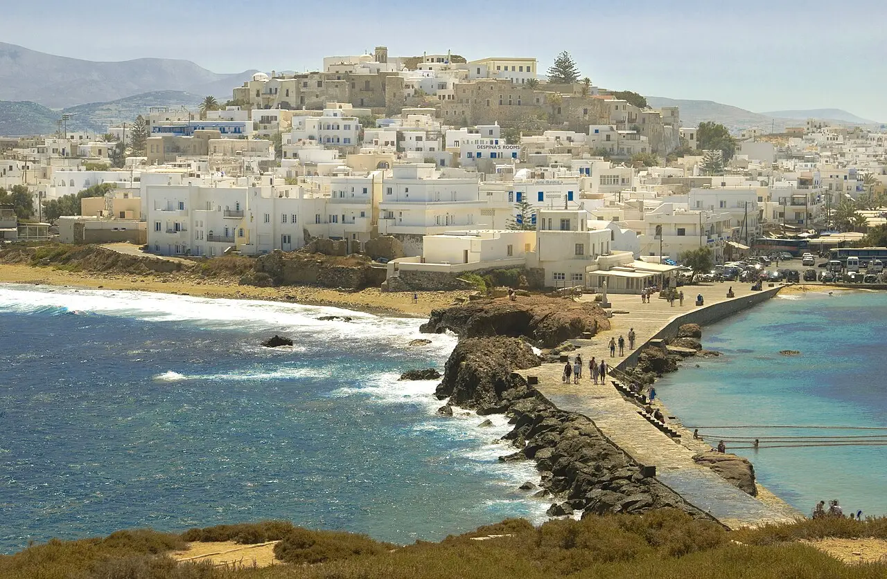
before 09:00The Bourgos / Old Market lanes — marble underfoot, arches overhead, staircases into courtyards into more staircases. Weekday mornings are the calm window[27].
Or walk out to the Portara at dawn instead of sunset — 5 min across the causeway, 5 min up[20]. You get it empty.
09:00Archaeological Museum — but in 2026 that means a free temporary exhibition on the second floor of the Ursulines building, 09:00–14:00, closed Tuesday[17].
10:00Kastro, mid-morning. Sanudo founded it in 1207 as the seat of his Duchy of the Archipelago; the Glezos Tower is the only survivor of twelve, and entry is free[22]. Walk the municipality's own order: in via Trani Porta → Della Rocca Barozzi → Crispi Tower → Catholic Cathedral → Capuchin monastery → Ursuline school[76].
11:30Venetian Museum (Della Rocca-Barozzi), 10:00–15:00, ~40-min staff-led walk-through[23]. The one museum that reliably delivers this year.
13:00Lunch in the lanes, then Agios Georgios: 1 km, flat, 15 minutes along the waterfront, Blue Flag, shallow[25].
Don't give it a whole day — it's the most crowded stretch on the island[53]. It's a swim, not a beach day.
The Tragaea, by car
car — 1 of 2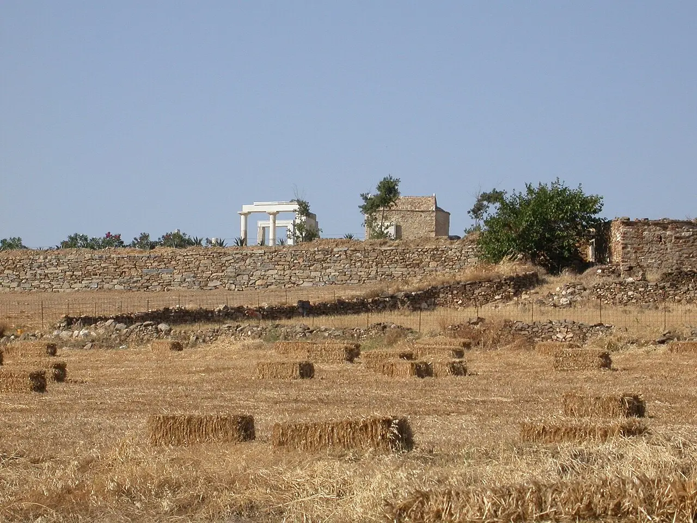
08:15Collect the car on the port strip, where the rental desks sit[77], and drive out. Sangri is ~25 minutes[30].
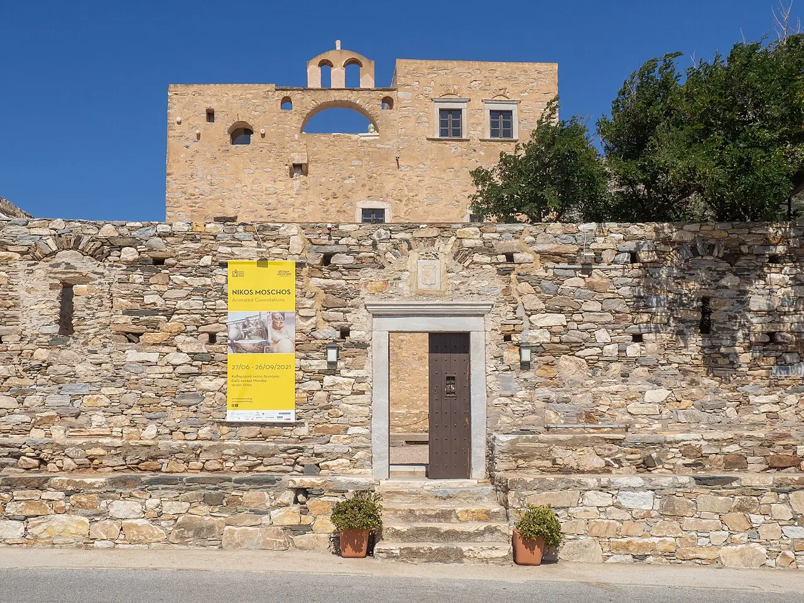
08:45Temple of Demeter, Gyroulas — the interior's must-see. Built c. 530 BC in Naxian marble, an almost square 13.29 × 12.73 m, one of the earliest Ionic temples anywhere, partly re-erected in 1994[39]. 08:30–15:30, €5 with the site museum, closed Tuesday[6].
11:00Bazeos Tower at the 12th km of the Chora–Agiassos road — a c. 1600 monastery restored and reopened in 2001[45]. Tue–Fri 11:00–18:00, Sat–Sun 10:00–20:00, closed Monday[11]; the Naxos Festival exhibition runs here 31 May – 11 Oct 2026[44].
12:00Halki, 16 km / 30 min from Chora at 280 m, the island's former capital[36]. Three things inside five minutes' walk: Vallindras (workshop 1862, kitron since 1896, fifth generation[78]), Fish & Olive[65], and Panagia Protothroni, open 08:00–20:00, free[36]. Agios Georgios Diasoritis 500 m away opens only 1 Jul–31 Aug, 11:00–13:30[36].
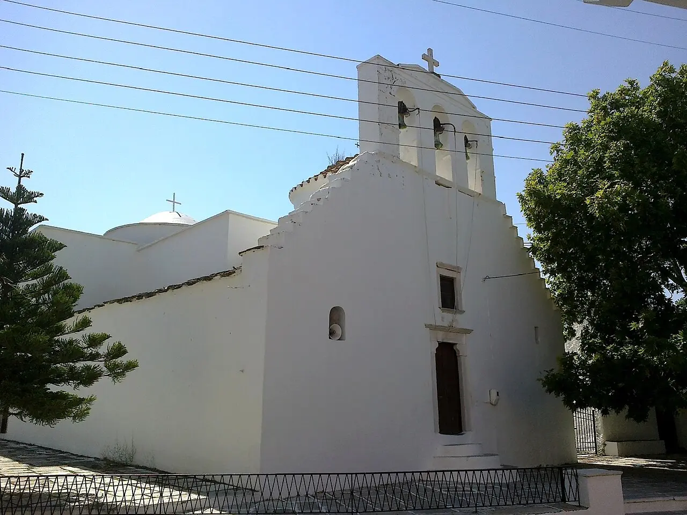
13:00Lunch on Halki's square. To Spitiko Galaktoboureko is one product, cash only, and sells out — go early[64].
14:30Moni for Panagia Drosiani — built in phases between the 4th and 6th centuries, the oldest Byzantine church in the Cyclades, with 5th-century equestrian saints[37]. Nominally 11:00–13:30 and in practice it depends on the caretaker[36] — go before lunch if you want certainty.
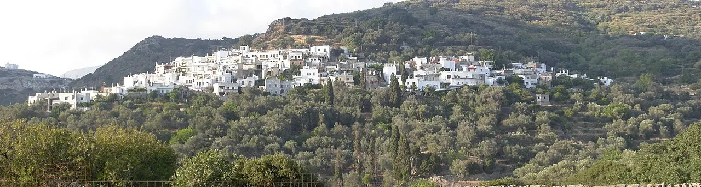
17:00If you want it on foot instead of through a windscreen: Trail 4 out of Halki is 7.2 km, 2 h 10, moderate, and picks up five churches from the 6th to the 14th century[35] — the best-value walk on the island.
18:30Drop down through Filoti, the largest village on the island under Zas[52], and back toward the coast.
This is the food day. The eating on Naxos is inland, so it isn't a separate day — it's what you do at lunch and dinner on the two driving days.
Axiotissa at Kastraki, run by Yiannis Vasilas and Sofia Dimakopoulou off their own farm[63]. Booked 3–4 days ago — mandatory in high season[12]. The single non-negotiable reservation of the trip.
Zas at dawn, Apeiranthos after
car — 2 of 2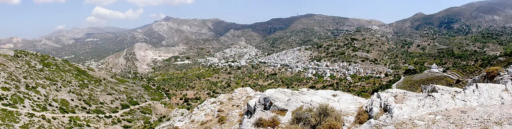
06:15Leave Chora. Filoti is 30–35 min[30], then the narrow single-track final 2 km to the Agia Marina chapel.
07:15Start climbing. Mt Zas from Agia Marina: ~6 km return, ~450 m gain, 3–4 h, red paint and cairns[31]. Summit 1,003 m — the highest point in the Cyclades[32].
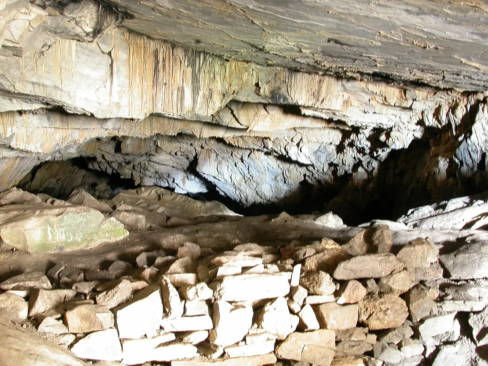
09:00Still on the mountain — about an hour up from the chapel, per people who've timed it[33]. Cairns are the only marker near the top and an unmarked gap in a wall misleads people[33].
11:00Down. Zas Cave at 630 m is a real site, not a myth stop — occupied Late Neolithic to Early Cycladic III, and ~15 °C cooler inside; bring a torch[32][31].
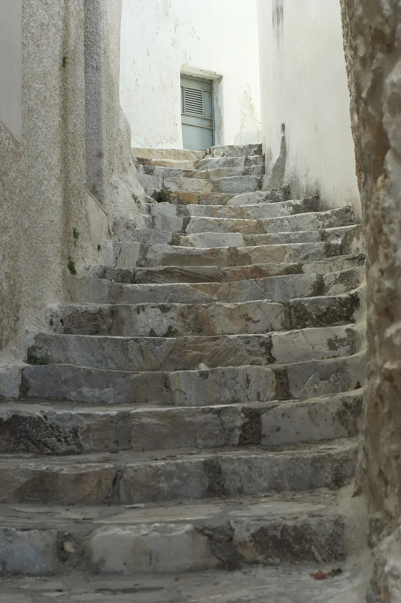
13:00Apeiranthos — 28 km from Chora at 650–700 m, population 773, Cretan-descended dialect, four museums[40]. Lunch at Stou Lefteri on the flower-bedecked veranda[12], or Amorginos for lamb chops with zamponi, graviera and anthotyro — the best single plate for tasting the island's products side by side[63].
14:45Archaeological Collection — Early Bronze Age marble figurines and the incised Aroni plaques, €5. Doors close 15:30, closed Tuesday[10]. The free Geological Museum runs to 16:00 and explains the marble and emery you've been driving past[41].
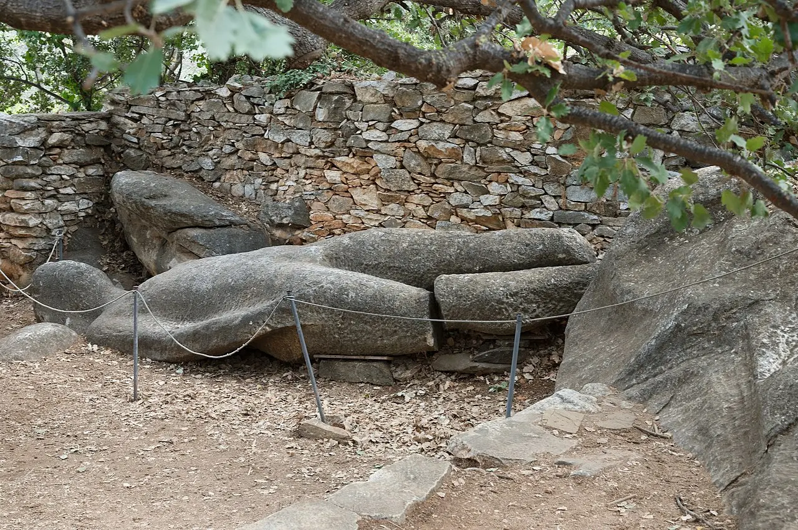
17:30Drive back west and spend the spare 90 minutes on Flerio (Melanes): two colossal unfinished kouroi, 24 h, free, designated car park and signposted footpaths[46]. The garden one is 4.7 m and 5–7 tonnes, its right leg snapped in transport[47].
Be off the mountains before dark. No street lighting, livestock on the road, and signs sometimes only in Greek[42].
If your dates touch 15 August, the three-day Panagia Filotitissa panigyri is the biggest night in the interior[52]: arrive after 23:00, the core runs midnight to 04:00, sleep in Chora — Filoti rooms fill a year ahead[69].
The west-coast strip, by bus
bus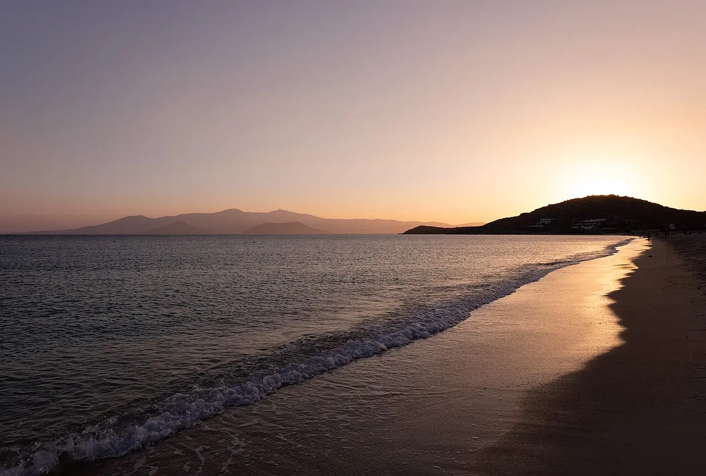
08:30KTEL Line 1 from the port bus station — roughly every 30 minutes in summer, ~15 min to Agios Prokopios[2][54]. Buy the ticket before boarding — drivers sell none[3].
09:00Swim at Agios Prokopios while the sea is still flat. On a gusty morning hold at the north-western public stretch, which is the sheltered one[54].
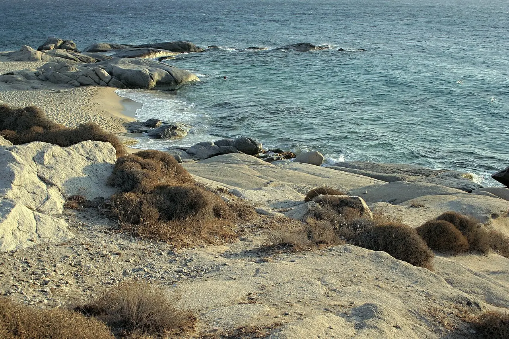
13:00Lunch in Agia Anna — well organised, wheelchair accessible, a small port[2]. Then walk south: it's 20–30 minutes along a continuous shoreline into Plaka[54].

16:00Plaka — 4 km of white sand and dunes, part-organised at the north end and wild to the south[55]. Popular, but it never fills; it's four kilometres long[60].
Swap for a car day? Then it's Mikri Vigla → Kastraki → Alyko, an 18 km run down one paved road: swim at Limanaki behind the headland before the thermal builds[59], then Alyko's cedar dunes and the mural-covered shells of an unfinished 1960s hotel[57] — bring food and shade, there is one food truck and zero sunbeds[56].
15:30, everywhere
Gyroulas, Yria and the Apeiranthos collection all shut at 15:30[6][10]; Chora's temporary exhibition at 14:00[17]. Arrive before 11:00 and the constraint never bites.
Tuesday is the dead day
Every state collection on the island closes Tuesday[6][10][17]. Bazeos closes Monday[11]. Land an interior day on a Tuesday and you've bought a drive.
Sunset 20:12
14 Aug 20:12, 20 Aug 20:04, 31 Aug 19:49[9]. A long evening for a town, nothing at all for a monument.
Swaps & subtractions
what to move, what to strike| Struck from the plan | Why | Cost if you insist |
|---|---|---|
| Santorini, Mykonos, Delos as day trips | ~10 hours door-to-door for ~3 hours ashore, on the vessel class the meltemi cancels first[15]. | −1 whole day |
| The Express Skopelitis to the Small Cyclades | Leaves Naxos 14:00–14:30 and returns 12:05–13:05 the next day[14]. Those islands are overnight destinations. | −1 night |
| The east coast — Moutsouna, Azalas, Psili Ammos | 36–44 km each way, narrow and winding after Apeiranthos, no sunbeds anywhere[82]. Emptier than Alyko, not better. | −1 day |
| Panermos / Kalantos by road | 54 km from Chora with one monopoly cafeteria[16]. Reach that coast by boat or not at all. | −1 day |
| The Apollonas kouros as its own errand | 2.5 h round trip for a 10-minute stop[48] — only inside the full northern loop, which needs a fourth car day you don't have. | −½ day |
| Cheimarros Tower | 28 km of dead-end road for a ruin you can only look at from outside[49]. | −½ day |
| Mitropolis Site Museum | The ministry's own listing says closed from 01.08.2025[29]. Don't build a morning around it. | — |
| Optional 4th-day boat, if you want water instead of a beach | A local day cruise from Agia Anna, 09:30→17:30, Rina cave plus Schinoussa or Iraklia, from €93.60[70] — Small Cyclades water without the ferry-timetable tax. | swap day 4 |
| Optional: the emery north | Apeiranthos → Koronos → Apollonas, ~110 km. The 1926–29 ropeway ran 8,720 m on 72 pylons and moved ~340,000 t; the pylons and loading stations still stand, free and open-air[50]. Koronos is the most atmospheric village on the island and the least visited[51]. | needs a 5th day |
Swap rules
If day 2 or 3 lands on a Tuesday — swap it with the beach day. Gyroulas, Yria and Apeiranthos are all shut[6][10].
If day 2 lands on a Monday — Bazeos is shut[11]. The rest of the loop stands; just drive past it.
If you only have three days — drop day 3 entirely. Drop Zas, don't compress it into an afternoon.
If it's blowing hard — the wind decides your morning, not your mood. West coast holds; anything south-facing is out.
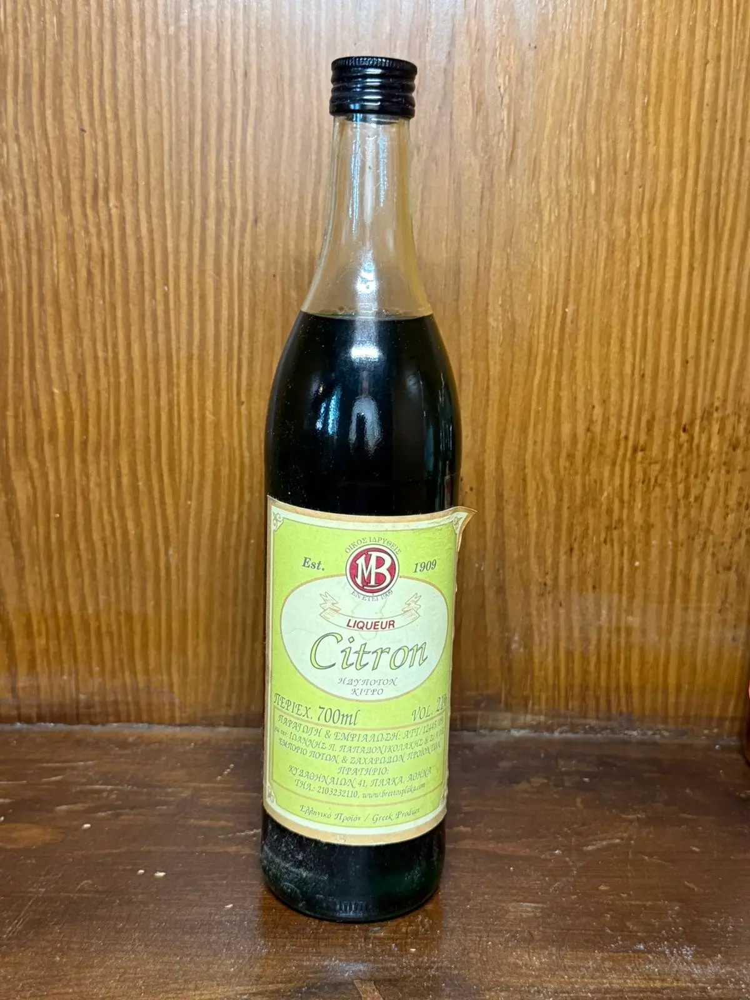
Booked before you land
the only things a late decision can't fix| What | Lead time | Why it's on this list |
|---|---|---|
| The ferry from Piraeus | 2–3 months | Take the high-speed: 3h15–3h25 against 5h05 on the conventional[71]. High-speed seats and car spots sell out for July–August, and 15 August is a national travel peak[72]. An afternoon conventional sailing lands after dark, rental desks shut, day one written off[71]. |
| A bed in Chora | 1–3 months | The port is in town, all 14 bus routes radiate from there[5], Agios Georgios is a ~5-minute walk, and it's the cheapest area on the island[74]. Don't split the stay over 3–4 nights — a second check-in costs you a half-day[75]. |
| The car — for two days only | weeks | €50–70/day at peak[4]. Book it for the two interior days and nothing else; Apollonas is two buses a day and the Flerio kouroi have no service worth planning around[3]. |
| Axiotissa | 3–4 days | Mandatory in high season[12]. Book it from home for your first driving night. |
| One evening at the Venetian Museum | days | The Domus Festival runs there April–October; book at the museum, and the ticket includes a glass of local wine or kitron[24]. |
Loose leaves
the seven folders this day plan was built fromChora on foot: Kastro, the Portara and the town core
The sight-by-sight ordering, the 2026 museum situation, and the Kastro walk the municipality itself lays out.
expedition · days two & threeThe Naxos interior: mountain villages, marble country and Mt Zas
Six driving loops compared, the ten waymarked trails, the kouroi, and every 2026 opening hour and price.
survey · day fourNaxos beaches, coast by coast
Sixteen beaches on nine axes, the wind rule that decides your morning, and which pairings fit one day.
survey · lunches & dinnersEating and drinking Naxian
Two PDO cheeses, a PGI potato, a PGI liqueur — what's genuinely Naxian, what to book, and what to carry home.
recon · before you landGetting there, and whether you need a car
Ferries and flights against 2026 prices, and the exact split between bus days and car days.
recon · the baseWhere to base yourself
Seven candidate bases scored on walk-to-port, walk-to-beach, bus frequency and driving tax.
recon · the temptationDay trips off Naxos
Round-trip feasibility for eight off-island options, and why the answer for a 3–4 day trip is none of them.
Four days is the shape this island wants. Three days is the same trip with day three torn out — Chora on foot, the Tragaea by car, the beach strip by bus.
Which leaves the question this run couldn't close: is three days on Naxos better spent as three days on Naxos, or as two nights here and two on Paros — thirty minutes away, ten-plus crossings a day, from €5.70[18]?